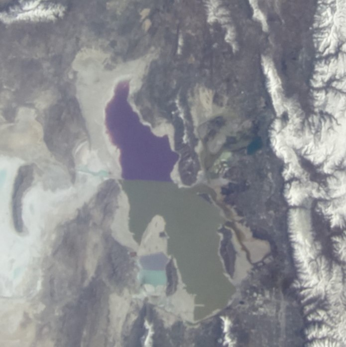

2007-2019

2007-2019

2007-2019
"Salt Lake" in Utah
The Great Salt Lake is a vast saltwater lake located in the state of Utah, in the United States. It is known for its high salinity and unique beauty. However, in recent years, the lake has faced a significant challenge related to drought.
Due to prolonged periods of drought and climate change, the water level of the Great Salt Lake has decreased, leading to a reduction in its overall size. The diminished flow of rivers that feed the lake, combined with water diversion for human purposes such as irrigation and water supply, has contributed to this situation.
The drought has had negative consequences on the lake's ecosystem. The declining water level can impact aquatic life and the fauna that depends on the lake, putting the natural habitat of many species at risk. Additionally, the shrinking of the lake can result in increased concentrations of salts and pollutants.
Please note that while I strive to provide accurate translations, some nuances and idiomatic expressions may be lost in translation.
In the following GIFs, we can observe how the lake has changed during the years (since 2007).
2007-2019
2007-2019
2007-2019
Analysis of these aerial photographs provides a sobering understanding of the changing state of Utah's salt lake.
By regularly monitoring and documenting the changes occurring in the Salt Lake through aerial photography, scientists and policy makers can gain valuable insights into the lake's condition and devise effective strategies for its conservation. Only through proactive measures and collective efforts can we hope to safeguard the natural wonders and delicate balance of the Utah Salt Lake for future generations.